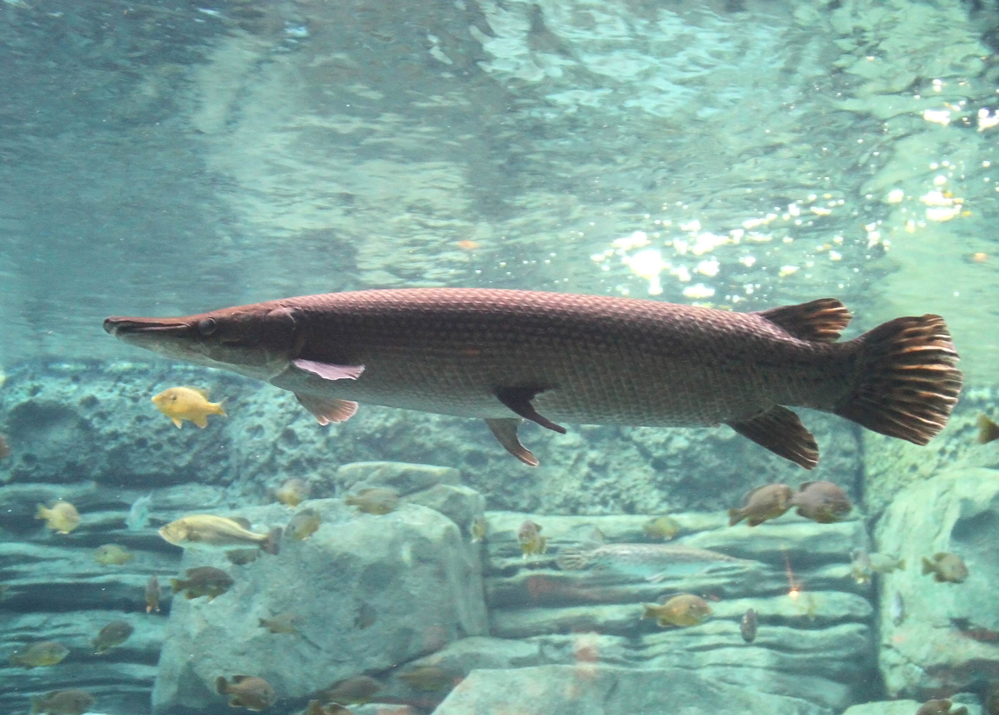

Timsah balığı (Atractosteus spatula), akvaryum hobisinde nadir görülen ancak doğada oldukça dikkat çekici bir türdür. Kuzey Amerika kökenli olan bu balık, özellikle Meksika Körfezi çevresindeki nehirlerde ve göllerde yaşar. Ortalama 2–3 metreye kadar büyüyebilen timsah balığı, uzun ve silindirik vücut yapısı ile timsahı andıran güçlü çeneleri sayesinde bu ismi almıştır. Vücudu sert pullarla kaplıdır ve bu özellik ona doğal ortamında yüksek koruma sağlar. Etçil beslenme yapısına sahip olan timsah balığı, doğada küçük balıklar, kabuklular ve sucul canlılarla beslenir. Akvaryum ortamında bakımı oldukça zordur; geniş hacimli ve güçlü filtreleme sistemine sahip tanklar gerektirir. Su sıcaklığı 20–28°C aralığında, pH değeri ise 6.5–7.5 seviyelerinde tutulmalıdır. Üreme davranışları doğada gözlemlenir, akvaryum ortamında üretimi neredeyse imkânsızdır. Güçlü yapısı, sıra dışı görünümü ve yırtıcı karakteriyle timsah balığı, akvaryum hobisinde daha çok deneyimli ve özel koleksiyonlara sahip akvaristlerin ilgisini çeken bir türdür.